Cómo cargar consultas, agendar recontactos y seguir a cada cliente desde la computadora o el celular.
VencidosPara hoyPróximosConcretados
Imperio Comercial · agenda.imperiocomercial.com.ar · Versión 21 · Octubre 2026
1
Qué es Agenda DAQ
Agenda DAQ es la agenda de consultas de Imperio Comercial. Sirve para anotar a cada cliente que pregunta por un producto y para no olvidarse de volver a contactarlo en el momento justo.
El circuito es siempre el mismo:
Cargás la consulta: nombre, celular, qué busca y cuándo volver a llamarlo.
La app te avisa ese día en la pantalla Hoy y, si las activaste, con una notificación en el celular.
Lo contactás con un toque (llamada o WhatsApp) y registrás qué pasó.
Si hay que volver a hablar, lo reagendás; si compró o no le interesa, lo cerrás.
Funciona en la computadora, en el celular y en la tablet, y se puede instalar como una app más. No manda emails: todos los avisos se ven en la app o llegan como notificación.
2
Ingresar e instalar la app
Entrá desde el navegador a agenda.imperiocomercial.com.ar con tu usuario y contraseña. Los usuarios los crea un administrador desde Ajustes.
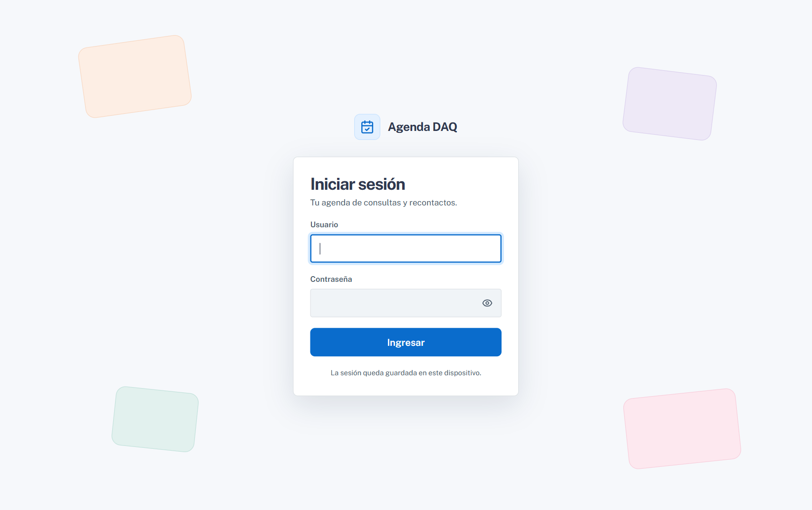
Pantalla de ingreso. El ojo al lado de la contraseña la muestra u oculta.
La sesión queda guardada en ese dispositivo, así que no hace falta volver a ingresar cada vez. Si te equivocás de contraseña varias veces seguidas, el ingreso se bloquea unos minutos por seguridad.
Instalarla como app
Android (Chrome): en Ajustes › Instalar en Android, o desde el menú de Chrome › Instalar app.
iPhone o iPad (Safari): tocá Compartir › Agregar a inicio.
Computadora (Chrome o Edge): el ícono de instalar en la barra de direcciones.
Instalada se abre a pantalla completa, sin la barra del navegador, y en el iPhone es la única forma de recibir notificaciones.
3
La pantalla Hoy
Es la primera pantalla que ves al entrar. Junta todo lo que tenés que hacer: lo que se te pasó, lo de hoy y lo que viene.
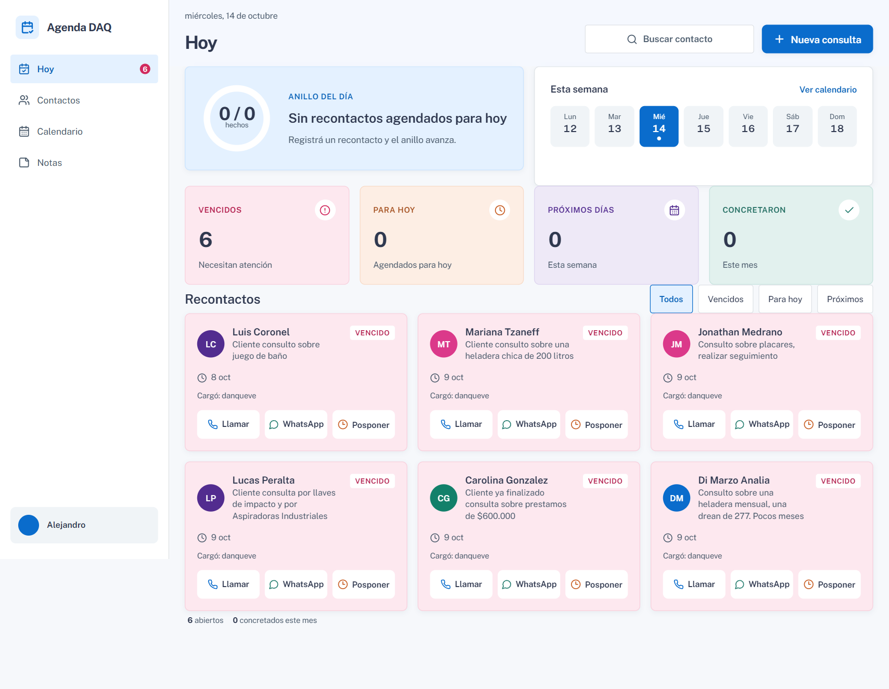
Pantalla Hoy con los datos de la base local: seis recontactos vencidos.
Qué muestra
Anillo del día: cuántos recontactos de hoy ya registraste sobre el total agendado. Cada vez que registrás uno, el anillo avanza.
Esta semana: los siete días con un punto de color. Tocá un día para verlo en el Calendario.
Resumen: cuatro tarjetas con los Vencidos, los Para hoy, los Próximos días y los que Concretaron en el mes.
Recontactos: una tarjeta por cliente, ordenadas primero los vencidos, después los de hoy y después los próximos. Con los botones de arriba (Todos, Vencidos, Para hoy, Próximos) filtrás la lista.
Las acciones de cada tarjeta
Llamar abre el teléfono con el número cargado.
WhatsApp abre un chat con ese cliente.
Posponer corre el recontacto: si era para hoy lo pasa una hora más tarde; si estaba vencido, lo deja para mañana a las 9:00.
Cada tarjeta indica también quién la cargó (Cargó: …). El número rojo sobre Hoy, en el menú, es la suma de vencidos y pendientes del día.
4
Cargar una nueva consulta
Cada vez que un cliente pregunta por algo, tocá Nueva consulta (arriba a la derecha en Hoy y en Contactos).
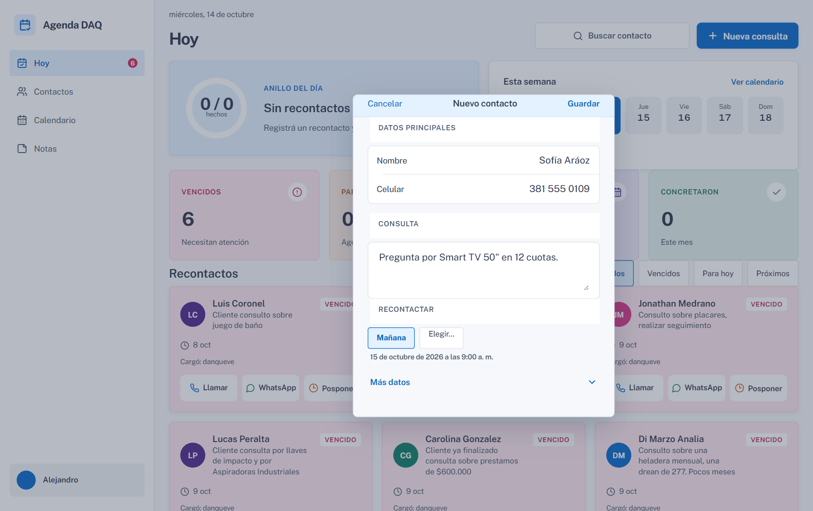
Hoja de nueva consulta con el recontacto agendado para mañana.
Completá Nombre y Celular. El celular se puede escribir como venga (con 0, con 15, con espacios): la app lo ordena sola.
Escribí la Consulta: qué busca, en cuántas cuotas, lo que te dijo.
En Recontactar elegí Mañana (queda a las 9:00) o tocá Elegir… para abrir el calendario y marcar otro día. Debajo aparece la fecha elegida.
Si querés sumar datos, abrí Más datos: producto, origen (WhatsApp, Instagram, Facebook, llamada, local, referido u otro), localidad, provincia y etiquetas.
Tocá Guardar.
Si el número ya existe, la app avisa «Este número ya está cargado» y ofrece Agregar consulta: la nueva consulta se suma al historial del cliente existente en vez de crear uno repetido.
Si no elegís fecha de recontacto, el contacto queda como Nuevo; con fecha, pasa a En seguimiento.
5
Contactos
La lista completa de clientes, con un buscador y filtros por estado.
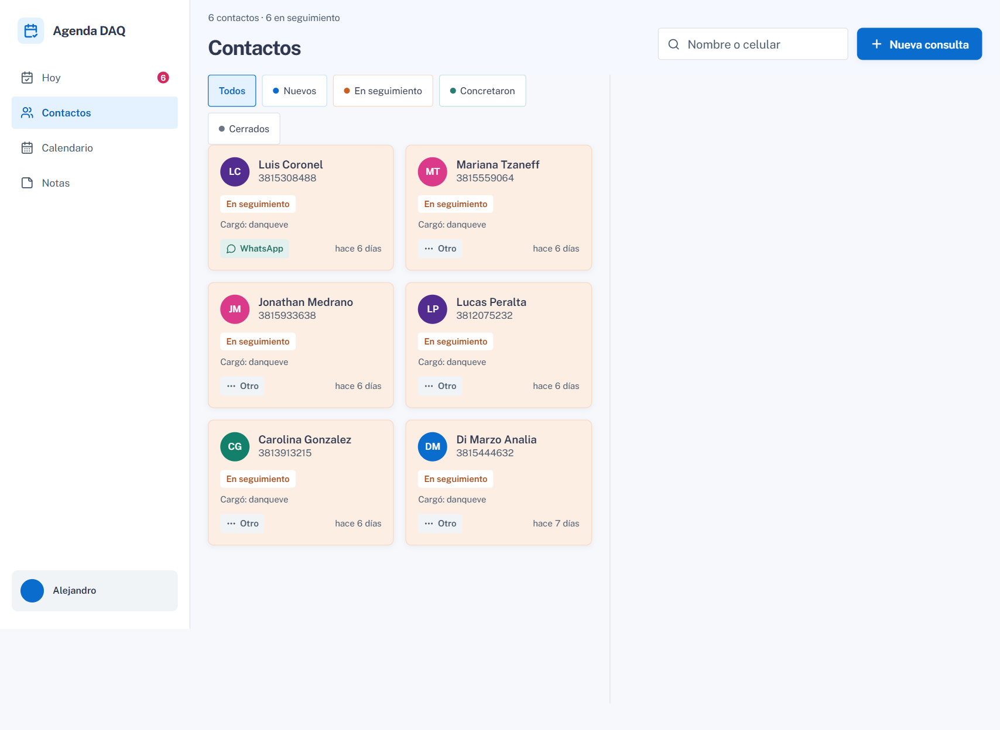
Contactos: arriba el total y cuántos están en seguimiento.
Buscar: por nombre, por celular, por producto o por algo escrito en la consulta.
Filtros:Todos, Nuevos, En seguimiento, Concretaron y Cerrados.
Cada tarjeta muestra nombre y celular, el producto, el estado, quién lo cargó, el origen (con su ícono) y hace cuánto se cargó. Tocala para abrir la ficha.
Al final de la lista, Cargar más contactos trae los siguientes.
6
La ficha del contacto
Todo lo que sabés de un cliente en un solo lugar. Se abre tocando su nombre en cualquier pantalla.
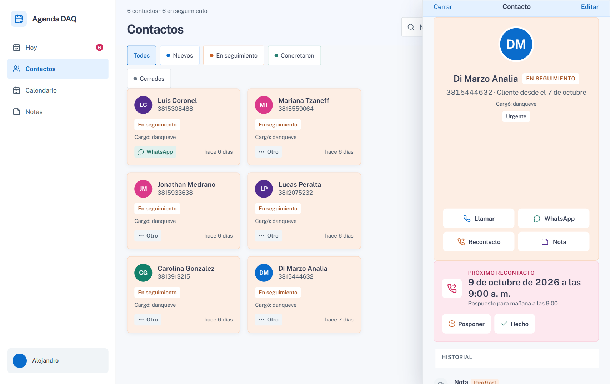
Ficha abierta al lado de la lista. El color de arriba depende del estado del cliente.
Arriba: nombre, estado, celular, desde cuándo es cliente, quién lo cargó y sus etiquetas.
Acciones:Llamar, WhatsApp, Recontacto (registrar cómo te fue) y Nota (dejar un comentario en el historial).
Próximo recontacto: cuándo toca volver a hablarle, con Posponer (lo pasa a mañana a las 9:00) y Hecho (registrar el recontacto). Se pone rosa si la fecha ya pasó.
Historial: cada consulta, llamada, mensaje y nota, con su fecha.
Estado: Nuevo, En seguimiento, Concretó o Cerrado. Al elegir Concretó o Cerrado se abre el registro para cerrarlo con el motivo; si el cliente estaba cerrado, elegir Nuevo o En seguimiento lo reabre.
Editar (arriba a la derecha) cambia los datos; Eliminar contacto (al final) lo borra junto con su historial, previa confirmación.
7
Registrar un recontacto
Después de hablar con un cliente, registrá cómo te fue. Así el historial queda completo y el anillo del día avanza.
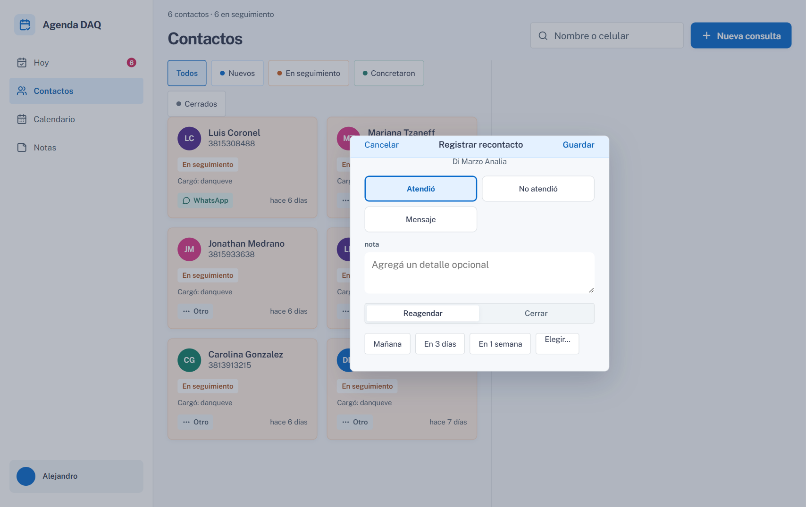
Hoja «Registrar recontacto».
Elegí el resultado: Atendió, No atendió o Mensaje.
Si querés, escribí una nota con lo que te dijo.
Elegí qué sigue:
Reagendar: marcá cuándo volver a llamarlo (mañana, en 3 días, en una semana o elegí la fecha).
Cerrar: elegí el motivo, Concretó, No interesa o Sin respuesta.
Tocá Guardar.
Si el contacto ya estaba cerrado, la misma hoja sirve para reabrirlo: escribís el motivo (opcional) y la nueva fecha.
8
Calendario
Todos los recontactos del mes en una grilla, con el detalle del día al costado.
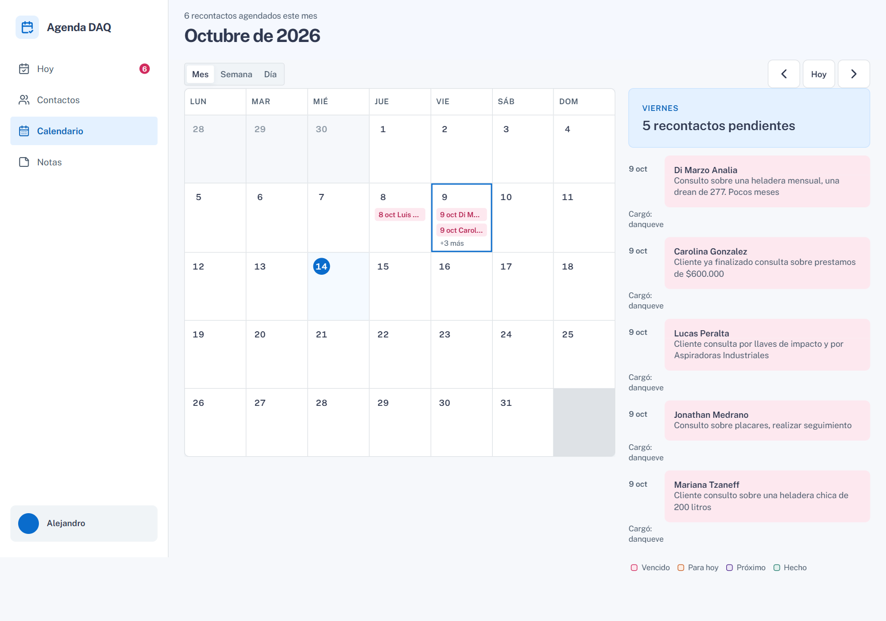
Vista Mes. Cada día muestra hasta dos recontactos y «+N más» si hay otros.
Con Mes, Semana y Día cambiás la vista; con las flechas pasás de mes y Hoy vuelve al día actual.
Tocá un día para ver a la derecha todos sus recontactos.
Tocá cualquier recontacto (en la grilla o en la lista del día) y se abre su detalle arriba del panel:
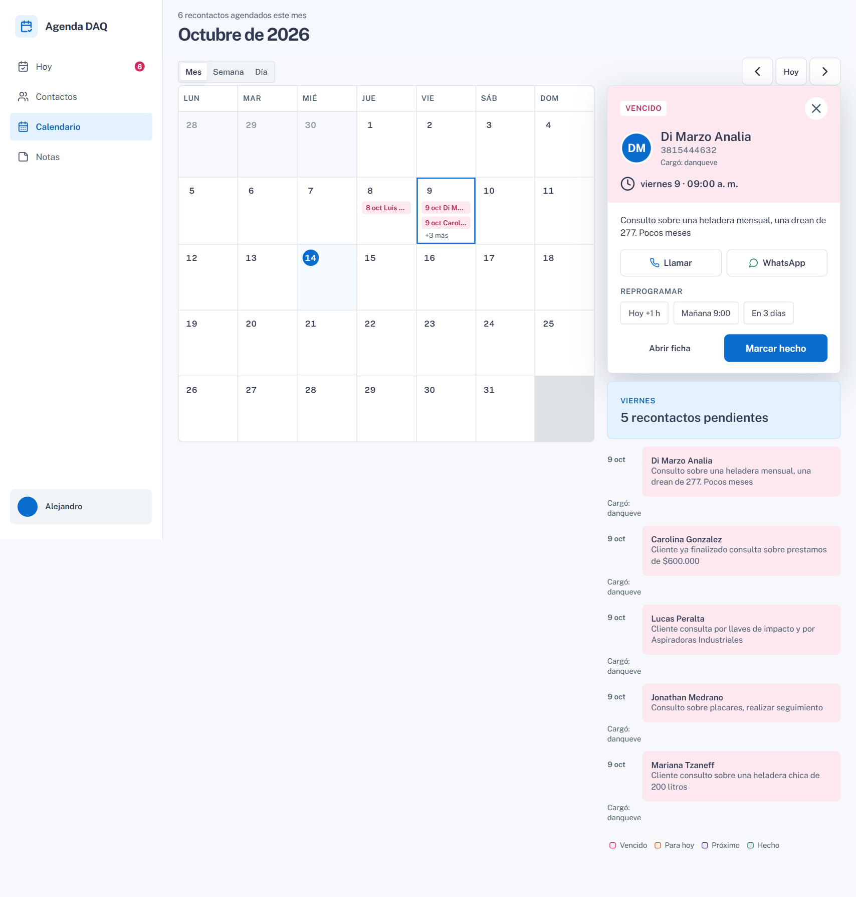
Detalle de un recontacto vencido, con las opciones para reprogramarlo.
Llamar y WhatsApp para contactarlo directo.
Reprogramar en un toque: Hoy +1 h, Mañana 9:00 o En 3 días. El calendario se actualiza solo.
Marcar hecho abre el registro del recontacto; Abrir ficha lleva a la ficha completa.
La tecla Escape o la cruz cierran el detalle.
9
Notas
Un anotador para lo que no es de un cliente puntual (promos, requisitos, ideas) o para recordatorios sueltos.
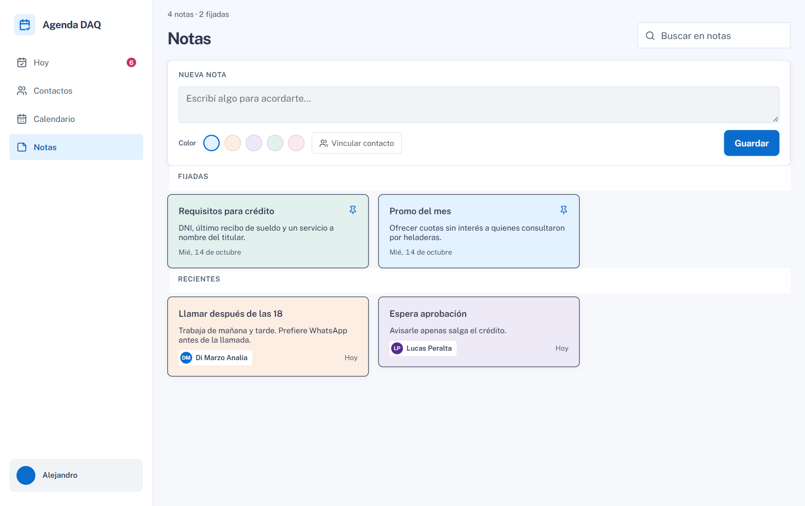
Notas con dos fijadas arriba y las recientes debajo.
Crear una nota
Escribí en Nueva nota.
Elegí un color (celeste, durazno, lavanda, menta o rosa).
Si es de un cliente, tocá Vincular contacto y buscalo.
Tocá Guardar.
Editar una nota
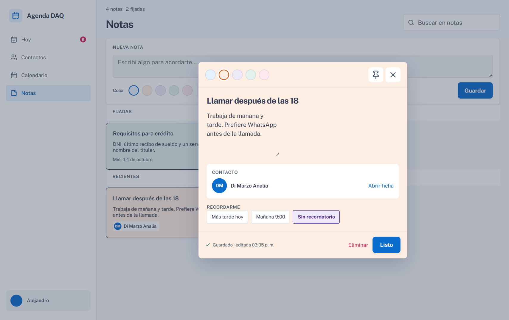
Nota abierta, vinculada a un contacto.
Lo que escribís se guarda solo: abajo dice Guardado · editada HH:MM.
El pin la fija arriba de todo; los puntos de color le cambian el color.
Si está vinculada a un cliente, Abrir ficha lleva a su ficha.
Recordarme te manda una notificación más tarde hoy o mañana a las 9:00; Sin recordatorio lo quita.
Eliminar la borra (pide confirmación). Listo la cierra.
El buscador de arriba busca en el título y el texto de todas las notas.
10
Ajustes
En la computadora se entra tocando tu nombre, abajo a la izquierda; en el celular, desde la pestaña Ajustes.
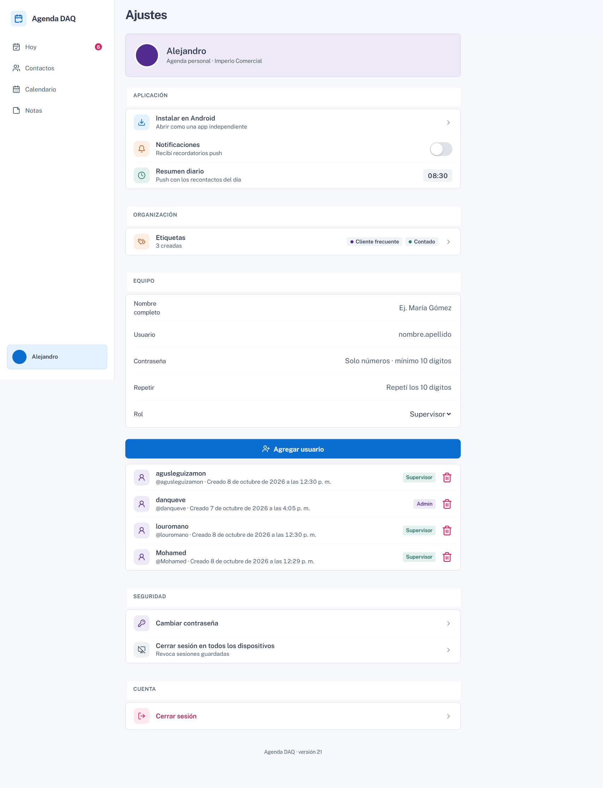
Ajustes de un usuario administrador (incluye el grupo «Equipo»).
Opción
Para qué sirve
Instalar
Instala la app en el dispositivo (aparece solo si todavía no está instalada).
Notificaciones
Activa los avisos en este dispositivo. Hay que aceptar el permiso que pide el navegador.
Resumen diario
La hora a la que llega cada mañana un aviso con los recontactos del día y los vencidos. Tocalo para cambiarla, ver los dispositivos activos o mandar una notificación de prueba.
Etiquetas
Crear, renombrar, cambiar de color o borrar las etiquetas que usás para clasificar contactos.
Equipo
Solo administradores: alta y baja de usuarios (ver la sección siguiente).
Cambiar contraseña
Pide la actual y la nueva dos veces. Al cambiarla se cierran las sesiones guardadas en otros dispositivos.
Cerrar sesión en todos los dispositivos
Útil si perdiste un celular: los demás dispositivos tendrán que volver a ingresar.
Cerrar sesión
Sale de la cuenta en este dispositivo.
11
Usuarios y roles
Varias personas pueden usar la agenda, cada una con su usuario. Todos ven y trabajan sobre los mismos contactos, y cada carga queda firmada con el nombre de quien la hizo.
Rol
Qué puede hacer
Admin
Todo lo de la agenda, y además crear y eliminar usuarios desde Ajustes › Equipo.
Supervisor
Todo lo de la agenda: cargar, registrar, reagendar, cerrar, notas. No ve el grupo Equipo.
Dar de alta un usuario (solo Admin)
En Ajustes › Equipo completá Nombre completo (es el que aparece en «Cargó: …»).
Usuario: el que va a usar para ingresar (letras, números, punto, guion o guion bajo).
Contraseña y Repetir: solo números, mínimo 10 dígitos.
Elegí el Rol y tocá Agregar usuario.
El tacho de basura al lado de cada usuario lo elimina. No se puede eliminar la propia cuenta ni el último administrador. Lo que cargó un usuario eliminado conserva su nombre.
12
Usarla en el celular
En el celular el menú pasa abajo, con cinco pestañas: Hoy, Contactos, Calendario, Notas y Ajustes. Todo lo demás funciona igual.
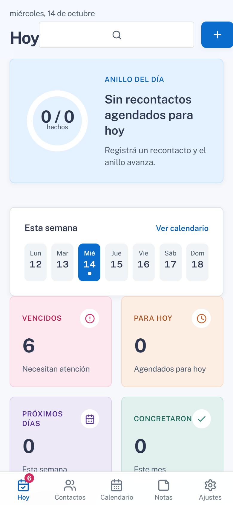
Hoy en el celular.
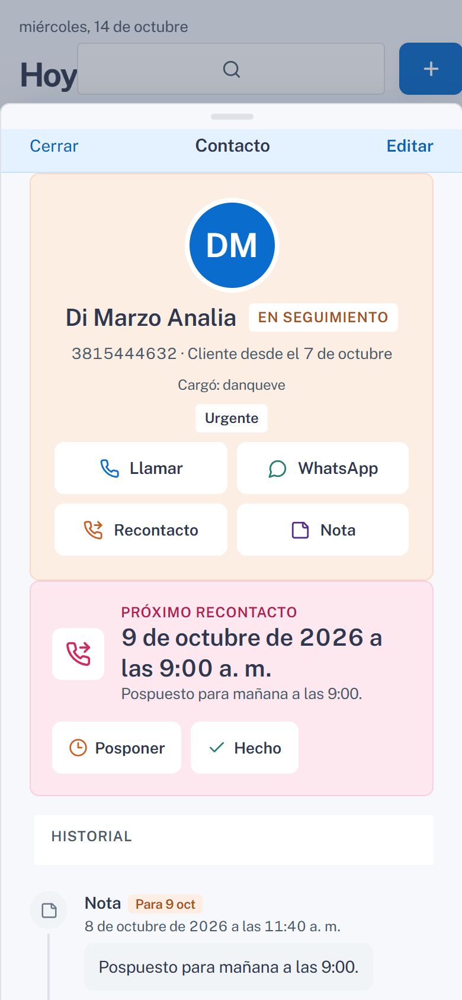
Ficha de un contacto.
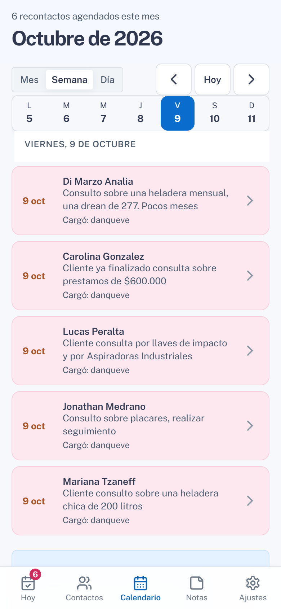
Calendario: la lista del día elegido.
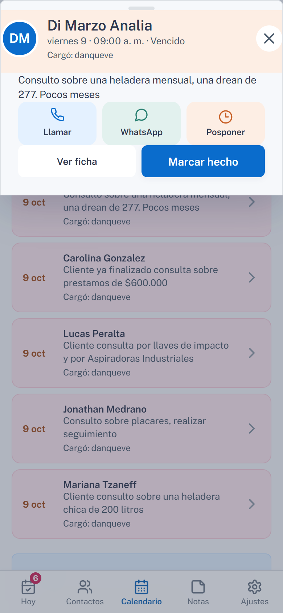
Al tocar un recontacto: Llamar, WhatsApp, Posponer, Ver ficha o Marcar hecho.
Sin conexión, la app sigue abriendo y muestra los últimos datos guardados, con un aviso arriba. Para cargar o registrar algo hace falta conexión.
13
Qué significa cada color
Los colores son siempre los mismos en toda la app, y siempre van acompañados de una palabra.
Color
Significa
Rosa
Vencido: la fecha de recontacto ya pasó. También eliminar.
Durazno
Para hoy, o en seguimiento. También posponer.
Lavanda
Próximos días, o reprogramado.
Menta
Concretó, hecho o guardado.
Celeste
Contacto nuevo, la acción principal o la app.
Gris
Cerrado o sin respuesta.
14
Preguntas frecuentes
No me llegan las notificaciones.
Revisá en Ajustes que Notificaciones esté activado en ese dispositivo y que el navegador tenga permiso. En iPhone, la app tiene que estar instalada desde Safari (Compartir › Agregar a inicio). En Resumen diario podés mandar una notificación de prueba.
Cargué un cliente que ya existía.
Si el celular coincide, la app lo detecta y te ofrece agregar la consulta al cliente existente. Si se cargó con otro número, podés eliminar el repetido desde su ficha.
¿Cómo saco un cliente de la lista de pendientes?
Registrá el recontacto y elegí Cerrar con el motivo, o cambiale el estado a Concretó o Cerrado desde la ficha. Ya no aparece en Hoy, pero sigue en Contactos.
Me equivoqué de fecha al reagendar.
Abrí la ficha y volvé a registrar o posponer; también podés reprogramarlo desde el Calendario.
Olvidé mi contraseña.
La app no tiene recuperación de contraseña. Pedile a un administrador que elimine tu usuario y te cree uno nuevo desde Ajustes › Equipo; lo que ya cargaste conserva tu nombre.